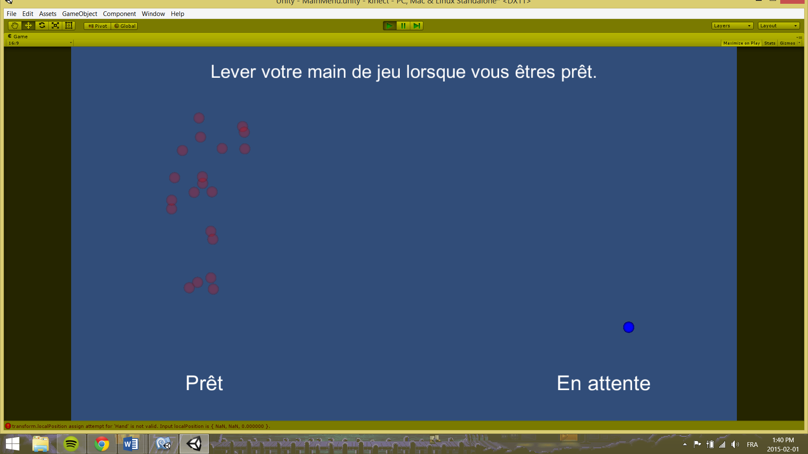

Chaque joueur peut maintenant sélectionner la main avec laquelle il jouera. On détecte premièrement les deux joueurs qui seront reliés à la partie et on leur permet ensuite de lever la main qui sera utilisée pour contrôler les palettes.
Le « wrapper » actuellement utilisé pour intégrer le SDK de Microsoft dans Unity est assez complet, mais ne permet pas la détection de la forme de la main. Nous voulons pouvoir détecter si la main est fermée ou ouverte (gestuelle appelée « grip »), mais le paquet inclus ne le permet pas. Plusieurs possibilités s’offrent à nous :
Évidemment, nous ne pouvons pas recommencer le projet au complet. Nous sommes donc tombés sur un projet payant dans l’« Asset Store » de Unity incluant un exemple de gestuelle « agripper ». Il s’agit d’un autre projet du professeur Rumen Filkov, servant d’extra aux techniques explorées auparavant.
Le projet étant payant, nous avons envoyé un courriel à M.Filkov pour demander l’utilisation du projet gratuite dans le cadre d’apprentissage de la recherche. Nous pourrions ainsi ajouter des fonctionnalités à notre projet grâce au « wrapper » amélioré que M.Filkov offre.